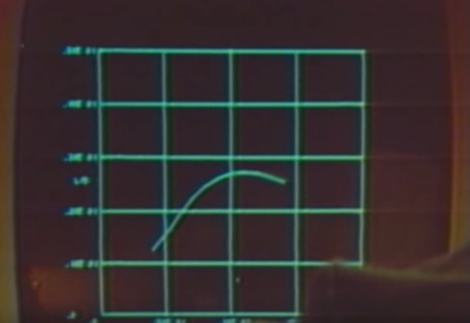

Intro To Tableau
with Lisa Williamslisatmh AT gmail dot com
@lisawilliams
More on me and my work
Get Ready!
Visit
https://github.com/lisawilliams/intro-to-tableau
This is where you will find all the resources for today's lesson. Bookmark this page! It is also where you will find a link to download the files and datasets we will be working with.
Download Tableau
If you haven't done so already, download Tableau.
If you have an .edu address: tableau.com/academic/studentsIf you don't have an .edu address, the free trial is here: https://www.tableau.com/products/desktop/download
A Tour of Tableau
The Start Page And Connecting To Data
The Data Pane
Dimensions And Measures
"Shelves" and "Pills"
Marks
Show Me
Things Tableau Is Good For, And Things Tableau Is Not Good For
Hands On #1: NPR Map
Instructions and Data Files
Instructions and data files for the hands-on portion of this talk can be found here:https://lisawilliams.github.io/lisa/tech/2018/03/14/scrape-to-map-tableau-tutorial.html
Scraping
Filtering
Color
Geocoding and Its Discontents
A Brief History Of 5,000 Years of Data Visualization
3500 BCE

3100 BCE
500 BCE
1525 CE
1821 BCE
1855 CE
1875 CE
1963 CE
1970 CE
Thinking Visually
Hands-On #2: A Person In Five Charts
Chart Types
Different Datasets In The Same Workbook
Labels And Text
Sorting
Axes
Break: 10 Minutes
Hands-On #3: More Complex Mapping
ICE Expenditures
Marks: Size of Bubbles
User Controls: Search, Type, Location and More
Data Extracts
Tableau Reader and Tableau Online
Hands-On #4: Scatterplot
MCAS Test Scores v. Per-Pupil Expenditure
Tooltips
Calculated Fields
Charts On The Dark Side
How To Spot
Manipulative and Deceptive
Charts and Graphs
Good Chart, Bad Chart
Q&A
Thanks
Questions?
Reach Lisa Williamslisatmh AT gmail dot com
@lisawilliams
More on me and my work
http://lisawilliams.github.io/data-journalism-basics
How this presentation was made
This presentation was made using Reveal.js, a framework for making HTML slide presentations; Reveal.js is a Node.js application. For more details, visit the repository for this application at https://github.com/lisawilliams/visual-thinkingYou can always find this presentation and its resources at http://lisawilliams.github.io/data-journalism-basics